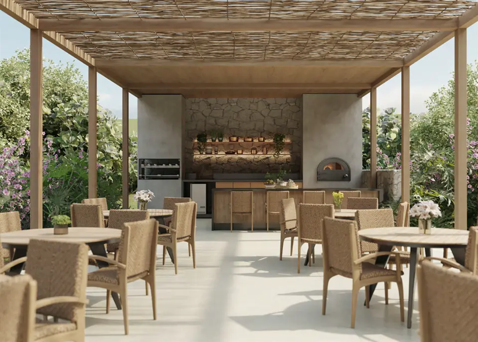

Imagens


Galeria
Imagens ilustrativas, de caráter artístico, conforme material da incorporadora.

Lotes e Sítios em Teresópolis
O Quinta das Amoras está localizado em uma região desenhada pela
natureza e com uma vista que é uma obra de arte. Basta você escolher o
seu refúgio preferido, entre opções de lotes e sítios, o que melhor se adapta
a sua vida no alto da Serra. Um projeto elegante, pensado pelo renomado
arquiteto Duda Porto, que em conjunto com a paisagista Daniela Infante
garantem deslumbrar os seus sentidos.
Metragens, tipologias e disponibilidade conforme material oficial da incorporadora, sujeitos a alteração sem aviso. Valores e condições confirmados na tabela vigente. Seleção e atendimento: Paulo Cotrim, CRECI-RJ 77677-F.
Imagens ilustrativas, de caráter artístico, conforme material da incorporadora.